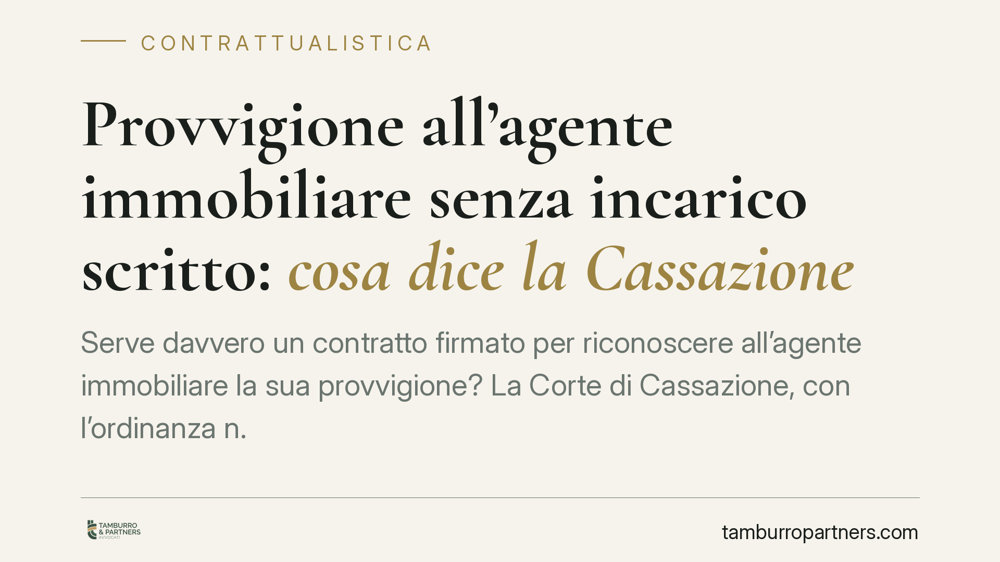

Provvigione all'agente immobiliare senza incarico scritto: cosa dice la Cassazione
Serve davvero un contratto firmato per riconoscere all'agente immobiliare la sua provvigione? La Corte di Cassazione, con l'ordinanza n. 7029 del 2021, risponde di no: ciò che conta è aver favorito l'incontro tra venditore e acquirente che hanno poi concluso l'affare. Una pronuncia che incide sui rapporti tra privati e mediatori e merita attenzione.

Il caso
La questione è ricorrente: un proprietario riceve da un'agenzia immobiliare la richiesta di pagamento della provvigione, ma sostiene di non aver mai firmato alcun incarico. Da qui la convinzione, diffusa quanto errata, che senza un contratto scritto nulla sia dovuto.
La Corte di Cassazione, con l'ordinanza n. 7029 del 12 marzo 2021, ha ribadito un principio consolidato: il diritto alla provvigione non dipende dalla forma scritta dell'incarico, ma dal fatto concreto della mediazione. Se l'agente ha messo in contatto le parti e queste hanno concluso l'affare grazie a quel contatto, la provvigione è dovuta.
Inquadramento normativo
La mediazione è disciplinata dagli articoli 1754 e seguenti del Codice civile. L'art. 1754 c.c. definisce mediatore chi "mette in relazione due o più parti per la conclusione di un affare, senza essere legato ad alcuna di esse da rapporti di collaborazione, di dipendenza o di rappresentanza".
L'art. 1755 c.c. stabilisce poi che il mediatore ha diritto alla provvigione "da ciascuna delle parti, se l'affare è concluso per effetto del suo intervento". La norma non richiede alcuna forma scritta: il presupposto è il nesso causale tra l'attività del mediatore e la conclusione del contratto.
Il contratto di mediazione, in sostanza, è un contratto a forma libera. Può perfezionarsi anche per fatti concludenti, cioè attraverso comportamenti che manifestano in modo univoco la volontà delle parti di avvalersi del mediatore. La Cassazione, nell'ordinanza in esame, conferma questa lettura: il modulo firmato non è una condizione di esistenza del diritto, ma uno dei possibili strumenti di prova.
Implicazioni pratiche
Per il privato che vende o acquista un immobile, la conseguenza è netta: non basta dire "non ho firmato nulla" per sottrarsi al pagamento. Se è dimostrabile che l'agente ha favorito l'incontro con la controparte e che l'affare si è concluso proprio grazie a quel contatto, la pretesa dell'agenzia può essere fondata.
Resta però un punto decisivo: l'onere della prova. È l'agente che deve dimostrare di aver svolto un'attività di mediazione effettiva e di aver determinato, con il proprio intervento, la conclusione dell'affare. Una mera segnalazione o l'invio di un annuncio non bastano: serve un'attività concreta che abbia reso possibile l'accordo.
È inoltre rilevante distinguere il caso in cui le parti si siano già conosciute e abbiano avviato trattative autonome. Se la conclusione dell'affare non dipende dall'intervento del mediatore, ma da contatti precedenti o indipendenti, il diritto alla provvigione può venire meno.
Va ricordato, infine, che la disciplina si applica nei rapporti tra privati. Per gli agenti che operano nell'esercizio della professione restano fermi gli obblighi formali e fiscali previsti dalla normativa di settore, che hanno però una funzione diversa rispetto alla validità del diritto alla provvigione.
Cosa fare in concreto
- Conserva ogni comunicazione con l'agenzia: email, messaggi, visite documentate. Sono elementi utili a ricostruire chi ha realmente favorito il contatto.
- Verifica il nesso causale prima di contestare la provvigione: chiediti se l'affare si è concluso grazie all'agente o per via autonoma.
- Diffida dalle richieste generiche: chi reclama la provvigione deve provare l'attività svolta e il suo effetto sull'affare.
- Formalizza i rapporti quando possibile: un incarico scritto chiaro tutela entrambe le parti e previene contenziosi sull'esistenza del mandato.
- Richiedi una valutazione del caso prima di pagare o di rifiutare: la fondatezza della pretesa dipende dalle circostanze concrete, non da formule generali.
La pronuncia non amplia in modo indiscriminato i diritti dell'agente. Ne sposta semplicemente il fondamento dalla forma alla sostanza: conta ciò che il mediatore ha fatto, non ciò che ha firmato. Per questo la valutazione richiede sempre un esame puntuale dei fatti.
---
*Contributo informativo a cura di Tamburro & Partners - Avv. Giuseppe Tamburro. Non costituisce parere legale.*
Ogni contratto ha il suo equilibrio.
Se vuoi una revisione delle clausole o una redazione su misura, scrivi allo studio. Ti rispondiamo entro un giorno lavorativo.